1HTW Berlin, Fachbereich 2 Informatik in Ingenieurwissenschaften, Wilhelminenhofstr. 75a, 12459 Berlin, Rudolf.Hoffmann@Student.HTW-Berlin.de, www.htw-berlin.de
Abstract: Wie weit trägt eine selbst implementierte Photogrammetrie-Pipeline auf einem handelsüblichen Laptop, ohne GPU-Cluster und ohne kommerzielle Software? Diese Langfassung beantwortet die Frage anhand eines studentischen Implementierungsprojekts, erklärt dazu jede Stufe der Verarbeitungskette mit ihrem Modell, ihren Parametern und ihren Datenmengen, und grenzt genau ab, was „selbst implementiert” bedeutet: Aus Bibliotheken stammen die numerischen Primitive, aus eigener Hand die gesamte Rekonstruktionslogik samt Fehlermodell des Bundle Adjustment. Auf einem Datensatz mit 67 Aufnahmen und mitgelieferten Ground-Truth-Posen registriert die Pipeline alle Kameras und liefert eine formtreue Punktwolke aus 39.721 Punkten bei 2,08 px Reprojektions-RMSE. Der Vergleich mit der Ground Truth zeigt Schwächen, die diese pipeline-eigene Kennzahl nicht anzeigt: Die geschätzte Brennweite liegt 47 % neben dem wahren Wert, die Kameraorientierungen weichen im Median um 6,29° ab, und zwei identische Aufrufe liefern unterschiedliche Ergebnisse. COLMAP erreicht auf denselben Bildern, derselben CPU und mit derselben Merkmalszahl 0,2 % Brennweiten- und 0,11° Orientierungsfehler in einem Viertel der Laufzeit. Ein eigens für diese Fassung gebautes Experiment mit synthetischen Korrespondenzen auf den echten Ground-Truth-Posen klärt die Ursache: Das Bundle Adjustment holt die Brennweite in seiner voreingestellten Konfiguration selbst dann nicht zurück, wenn Struktur und Posen exakt vorgegeben sind und der Restfehler bei 190 px liegt, weil es vorzeitig auf dem Schrittweitenkriterium abbricht. Werden Parametervektor und Abbruchkriterien angepasst, wandert die Brennweite von 47 % auf 6,9 % Fehler und der Orientierungsfehler auf 0,13°. Die Brennweite ist also bestimmbar, und der Defekt liegt in der Konfiguration des Lösers, nicht im Modell. Zugleich reagiert die Zahl akzeptierter Punkte deutlich auf eine falsche Brennweite, der Reprojektionsfehler dagegen kaum. Die Genauigkeit steckt in den Daten, und die Lücke liegt in der Umsetzung. Für jede gefundene Grenze benennt der Beitrag die Ursache im Code und den Beleg aus einer Messung.
Keywords: Structure-from-Motion; Photogrammetrie; Python; Punktwolke; Bundle Adjustment; Visualisierung; Studierendenprojekt
Aus einer Handvoll gewöhnlicher Fotos ein dreidimensionales Modell zu berechnen, gehört heute zu den Standardwerkzeugen von Vermessung, Denkmalpflege, Robotik und AR/VR. Drohnen kartieren Baustellen, Museen digitalisieren Exponate, autonome Systeme rekonstruieren ihre Umgebung. Die zugrundeliegende Technik ist in allen Fällen Structure-from-Motion (SfM), also die gleichzeitige Schätzung der Szenengeometrie und der Kamerapositionen aus reinen Bilddaten [1].
In der Praxis greifen die meisten Anwender zu fertigen Werkzeugen wie COLMAP [2], Meshroom oder RealityCapture. Diese liefern gute Ergebnisse, verbergen die zugrundeliegenden Algorithmen aber als Blackbox. Das hier beschriebene Projekt geht den umgekehrten Weg und baut die Verarbeitungskette selbst, mit frei verfügbaren Bibliotheken und ohne spezialisierte Hardware.
Daraus ergeben sich vier Fragen, die diese Fassung der Reihe nach beantwortet.
F1: Was heißt hier „selbst implementiert”? Beide Gutachten der eingereichten Kurzfassung fragten, wie sich der Anspruch einer eigenen Pipeline mit der Verwendung von SIFT, FLANN, RANSAC und Open3D verträgt. Abschnitt 3 beantwortet das stufenweise und belegt die Aufteilung am Quelltext.
F2: Wie funktioniert die Kette im Einzelnen? Abschnitt 4 erklärt jede Stufe mit ihrem mathematischen Modell, den tatsächlich gesetzten Schwellen, der Datenmenge am Ein- und Ausgang und der Entwurfsentscheidung, die dahintersteht. Alle Zwischenergebnisse sind als Diagnosebilder eines echten Laufs abgebildet.
F3: Wie gut ist das Ergebnis wirklich? Abschnitt 6 misst gegen zwei unabhängige Maßstäbe, nämlich die mitgelieferten Ground-Truth-Posen und COLMAP auf denselben Bildern, derselben CPU und mit derselben Merkmalszahl.
F4: Wo liegen die Ursachen? Für jede gemessene Grenze benennt Abschnitt 7 die Stelle im Code und die Messung, die sie belegt. Wo die Datenlage für eine Ursachenaussage nicht reichte, wurde ein eigenes Experiment gebaut; Abschnitt 6.5 berichtet es.
Der Beitrag versteht sich als Erfahrungsbericht mit Messwerten. Sein Ertrag liegt weniger in einem neuen Verfahren als in der belegten Aussage, welche Teile einer SfM-Pipeline sich mit vertretbarem Aufwand selbst bauen lassen, welche nicht, und woran man das merkt. Die Kurzfassung dieses Beitrags erscheint im Tagungsband; die vorliegende Fassung ergänzt sie um die vollständige Methodik, die Herleitung der Kennzahlen, zusätzliche Messreihen und das Brennweitenexperiment.
Alle Stufen beruhen auf dem Lochkameramodell. Ein Punkt X in Weltkoordinaten wird über die Rotation R und die Translation t in das Kamerasystem gebracht, perspektivisch geteilt und mit der Kalibriermatrix K in Pixel abgebildet:
xcam = R X + t, (xn, yn) = (xcam/zcam, ycam/zcam), K = [[f, 0, cx], [0, f, cy], [0, 0, 1]].
Die Implementierung erweitert das Modell im Bundle Adjustment um eine radiale Verzeichnung nach Brown-Conrady mit zwei Koeffizienten. Mit r² = xn² + yn² und dem Verzeichnungsfaktor d = 1 + k1r² + k2r⁴ lautet die Projektion
u = f · xn · d + cx, v = f · yn · d + cy.
Quadratische Pixel, also fx = fy, sind der Normalfall; eine Option trennt beide Brennweiten. Das Kamerazentrum in Weltkoordinaten ergibt sich als C = −RTt. Diese Größe wird für jeden Vergleich mit der Ground Truth gebraucht, weil sich Positionsfehler nur im Weltsystem sinnvoll angeben lassen.
Monokulares SfM bestimmt Geometrie nur bis auf eine Ähnlichkeitstransformation. Eine Rekonstruktion kann also gedreht, verschoben und beliebig skaliert sein, ohne dass sich ein einziger Bildpunkt ändert. Jeder Vergleich mit einer Referenz muss diese sieben Freiheitsgrade zuerst binden; Abschnitt 5.4 beschreibt, wie das geschieht.
Zwei Ansichten desselben Punktes sind über die Fundamentalmatrix F verknüpft. Für korrespondierende homogene Bildpunkte x1 und x2 gilt x2T F x1 = 0. Ein Punkt im ersten Bild schränkt seinen Partner im zweiten also auf eine Gerade ein, die Epipolarlinie. Diese Bedingung ist rein geometrisch und erlaubt es, falsche Zuordnungen zu verwerfen, ohne die Szene zu kennen.
Ist die Kalibrierung bekannt, geht F in die Essential-Matrix E = KTFK über. Aus E lassen sich vier Kombinationen aus Rotation und Translationsrichtung gewinnen, von denen die Cheiralitätsbedingung, also die Forderung positiver Tiefe in beiden Kameras, die richtige auswählt. Die Länge der Translation bleibt unbestimmt; sie ist der Skalenfreiheit geschuldet und wird üblicherweise auf eins gesetzt.
Ist F fehlerhaft geschätzt, überträgt sich der Fehler unmittelbar auf E und damit auf die Startpose der gesamten Rekonstruktion. Deshalb erhält die Verifikation in Abschnitt 4.4 vier hintereinandergeschaltete Prüfungen statt einer.
Sind zwei Posen bekannt, ergibt sich ein 3D-Punkt als Schnitt zweier Sehstrahlen. Die Implementierung benutzt dafür die direkte lineare Transformation: Aus den beiden Projektionsgleichungen entsteht ein homogenes Gleichungssystem, dessen kleinster singulärer Vektor den gesuchten Punkt liefert.
Entscheidend für die Qualität ist der Winkel zwischen den Sehstrahlen. Bei kleinem Winkel verläuft der Schnitt flach, und ein Messfehler von wenigen Zehntel Pixeln verschiebt den Punkt entlang der Sichtachse um ein Vielfaches. Für zwei Kameras mit Basislinie b im Abstand Z und einem Messrauschen σ in Pixeln gilt näherungsweise σZ/Z ≈ σ / (f · sin α).
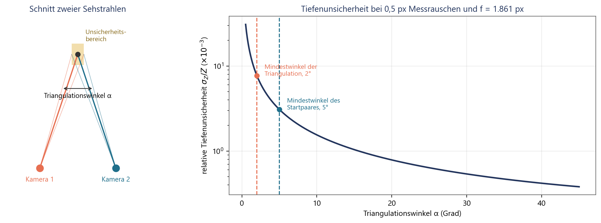
Sobald 3D-Punkte existieren, lässt sich eine weitere Kamera über ihre 2D-3D-Zuordnungen einpassen. Das Perspective-n-Point-Problem sucht diejenige Pose, die alle bekannten Punkte möglichst genau auf ihre gemessenen Bildpositionen abbildet. Robust wird das Verfahren durch RANSAC [10]: Aus zufälligen Minimalmengen entstehen Hypothesen, gezählt wird die Zahl der Zuordnungen, die dazu passen, und nur diese Inlier gehen in die abschließende Verfeinerung ein.
Das Bundle Adjustment (BA) optimiert alle Kameraposen, alle 3D-Punkte und die gemeinsame Intrinsik zugleich [11]. Minimiert wird die Summe der quadrierten Reprojektionsfehler über alle Beobachtungen (i, j), also über jedes Paar aus Kamera i und Punkt j, das tatsächlich gemessen wurde:
E = Σ(i,j) ρ( ‖ π(K, Ri, ti, Xj) − xij ‖² ).
Dabei ist π die Projektion aus Abschnitt 2.1 und ρ eine robuste Verlustfunktion, die den Einfluss grober Ausreißer begrenzt. Die Aufgabe ist groß, aber dünn besetzt: Eine Beobachtung hängt nur von ihrer eigenen Kamera, ihrem eigenen Punkt und den gemeinsamen Intrinsikparametern ab. Genau diese Struktur macht das Problem überhaupt lösbar; Abschnitt 4.6 zeigt sie als Bild und beziffert sie für den Referenzlauf.
Die inkrementelle Bauform geht auf Photo Tourism [12] zurück und ist in COLMAP [2] zu einem Referenzsystem ausgebaut, das robuste Merkmalsverarbeitung, sorgfältige Ausreißerbehandlung und einen für dieses Problem gebauten C++-Kern verbindet. OpenMVG und AliceVision beziehungsweise Meshroom verfolgen dieselbe Grundstruktur mit anderem Schwerpunkt. Der vorliegende Beitrag tritt nicht in Konkurrenz zu diesen Systemen; er benutzt COLMAP als Maßstab und fragt, wie weit eine Umsetzung kommt, die dieselben Lehrbuchbausteine [1] in Python zusammensetzt.
Die Formulierung „selbst gebaute Pipeline” verlangt eine genaue Abgrenzung, denn SIFT, FLANN und RANSAC sind etablierte Verfahren, deren Implementierungen niemand ohne Not neu schreibt. Die Arbeitsteilung in diesem Projekt sieht wie folgt aus: Aus den Bibliotheken stammen die numerischen Primitive, also einzelne, klar umrissene Rechenschritte. Selbst geschrieben ist alles, was diese Primitive zu einer Rekonstruktion verbindet, sowie das vollständige Fehlermodell des Bundle Adjustment.
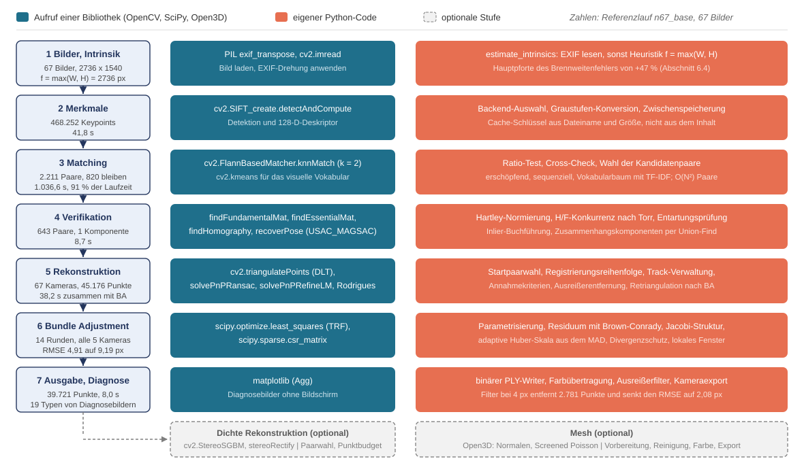
| Stufe | Aus Bibliotheken | Eigener Python-Code |
|---|---|---|
| Merkmale | cv2.SIFT_create, optional kornia auf der GPU |
Bildladen mit EXIF-Rotation, Schätzung der Intrinsik, Zwischenspeicherung der Merkmale |
| Matching | cv2.FlannBasedMatcher (k-nächste Nachbarn), cv2.kmeans für das visuelle Vokabular |
Lowe-Ratio-Test, Cross-Check, Auswahl der Kandidatenpaare (erschöpfend, sequenziell, Vokabularbaum mit TF-IDF), blockweiser GPU-Matcher |
| Geometrische Verifikation | cv2.findFundamentalMat (USAC_MAGSAC), findEssentialMat, recoverPose, findHomography |
Hartley-Normierung, Planaritätsprüfung, Inlier-Buchführung, Zusammenhangskomponenten des Szenengraphen per Union-Find |
| Inkrementelle Rekonstruktion | cv2.triangulatePoints (DLT), cv2.solvePnPRansac, solvePnPRefineLM, cv2.Rodrigues |
Wahl des Startpaars, Reihenfolge der Registrierung, Verwaltung von Tracks und Beobachtungen, Akzeptanzkriterien für neue Punkte, Ausreißerentfernung, Track-Merging, Retriangulation nach BA |
| Bundle Adjustment | scipy.optimize.least_squares (Trust-Region-Reflective), scipy.sparse |
Parametrisierung, Residuenfunktion inklusive Brown-Conrady-Verzeichnung, Aufbau der dünnbesetzten Jacobi-Struktur, adaptive Huber-Skala, Divergenzschutz, lokales BA-Fenster |
| Dichte Rekonstruktion | cv2.StereoSGBM, stereoRectify, reprojectImageTo3D |
Auswahl der Stereopaare, Sichtbarkeitsfilter, Punktbudget |
| Mesh | Open3D (Normalenschätzung, Screened Poisson) [3] | Vorbereitung und Reinigung der Wolke, Farbübertragung, Export |
| Ausgabe und Diagnose | matplotlib | binärer PLY-Writer, Kameraexport, 19 Typen von Diagnosebildern |
sfm/ und run_sfm.py.Die Antwort auf die Frage, ob wirklich alles Python ist, lautet damit: Der gesamte Projektcode ist Python. Tab. 2 zählt 9.792 Zeilen, davon 1.586 für die Visualisierung und 560 für die Anbindung des COLMAP-Backends, das nur als Vergleichsmaßstab dient. Eine eigene Zeile C++ oder CUDA existiert nicht. Die aufgerufenen Bibliotheken sind ihrerseits in C++ geschrieben, so dass die rechenintensiven Primitive kompiliert ausgeführt werden und Python die Steuerungsschicht bildet.
| Modul | Zeilen | Aufgabe |
|---|---|---|
sfm/visualizer.py |
1.586 | 19 Typen von Diagnosebildern, ohne Bildschirm |
run_sfm.py |
1.482 | Kommandozeile, Ablaufsteuerung, Checkpointing, Export |
sfm/reconstruction.py |
1.220 | inkrementelle Rekonstruktion, Tracks, Ausreißer |
sfm/feature_matching.py |
1.109 | Matching-Strategien, Ratio-Test, Retrieval |
sfm/bundle_adjustment.py |
783 | Residuen, Jacobi-Struktur, Solveranbindung |
sfm/colmap_backend.py |
560 | Aufruf und Rückimport von COLMAP |
sfm/feature_extraction.py |
506 | SIFT und alternative Detektoren |
sfm/mvs.py |
395 | dichte Rekonstruktion über Stereo |
sfm/point_cloud.py |
338 | Ausreißerfilter, Kolorierung, PLY-Export |
sfm/geometric_verification.py |
312 | F, E, Homographiekonkurrenz, Pose |
sfm/mesh/* |
1.050 | Poisson-Rekonstruktion und Nachbearbeitung |
| übrige Module | 451 | Intrinsik, Geräteauswahl, Hilfsfunktionen |
| gesamt | 9.792 |
Für die Laufzeit ist diese Aufteilung günstiger, als es zunächst klingt: Die in Abschnitt 6.8 gemessene Dominanz des Matchings entsteht innerhalb der OpenCV-Aufrufe und nicht im Python-Code darum herum. Der Engpass liegt also in der Strategie, nicht in der Sprache. Eine Einschränkung gibt es dennoch, und sie ist messbar: Die Schleife über die Bildpaare läuft seriell; im gesamten Pipeline-Code findet sich weder ein Thread-Pool noch eine Prozessparallelisierung. Abschnitt 6.8 zeigt, was das im Vergleich mit COLMAP kostet.
Die Kette gliedert sich in die Stufen aus Fig. 1 und Fig. 3. Sämtliche Diagnosebilder
dieses Abschnitts stammen aus einem einzigen Lauf über 67 Bilder (Lauf B, siehe
Abschnitt 5.2), zeigen also durchgehend dieselbe Rekonstruktion. Die Zahlen im Fließtext
beziehen sich dagegen auf den Referenzlauf n67_base, weil nur er mit COLMAP direkt
vergleichbar ist; wo Bildinhalt und Referenzlauf auseinanderfallen, ist das kenntlich
gemacht.
Die Pipeline liest alle Bilder eines Verzeichnisses, wendet die EXIF-Orientierung an und schätzt daraus eine gemeinsame Kalibriermatrix. Der Hauptpunkt wird auf die Bildmitte gesetzt. Für die Brennweite gibt es zwei Wege: Steht im EXIF-Feld eine kleinbildäquivalente Brennweite, wird sie über die Sensordiagonale in Pixel umgerechnet; fehlt sie, greift die Heuristik f = max(W, H), was einem diagonalen Bildwinkel von etwa 53° entspricht.
Für den Buddha-Datensatz greift die Heuristik, denn die Bilder tragen kein EXIF. Sie setzt f = 2.736 px an, während die mitgelieferte Ground Truth 1.860,9 px ausweist, also 47,0 % weniger. Diese eine Zeile ist die Eintrittspforte des wichtigsten Fehlers dieses Beitrags. Erschwerend kommt hinzu, dass die Kommandozeile keine Möglichkeit bietet, eine bekannte Kalibrierung vorzugeben. Abschnitt 6.5 verfolgt die Wirkung dieser Schätzung durch die gesamte Kette.
Für jedes Bild werden bis zu --n_features SIFT-Merkmale [4] mit 128-dimensionalen
Deskriptoren detektiert, im Referenzlauf 8.000 und im Bildlauf B 12.000. SIFT ist
skalierungs-, rotations- und beleuchtungsinvariant und findet Merkmale bevorzugt an Ecken,
Kanten und texturierten Flächen. Auf Systemen mit GPU übernimmt eine kornia-basierte
Detektion, sonst OpenCV-SIFT auf der CPU; beide Pfade liefern denselben Ausgabe-Kontrakt.
Der Referenzlauf findet 468.252 Merkmale, im Mittel 6.989 je Bild, und benötigt dafür
41,8 s.
 |
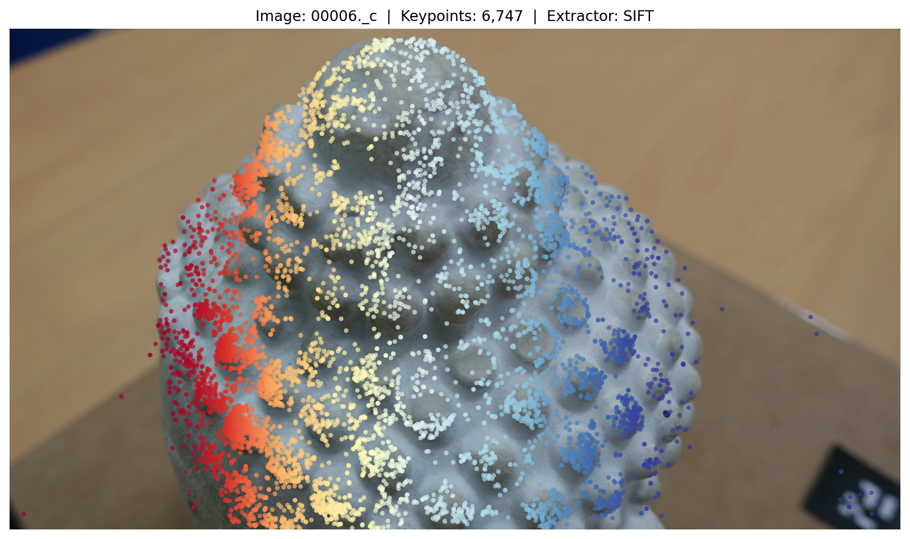 |
| Bild 00044: 9.126 Merkmale | Bild 00006: 6.747 Merkmale |

Extrahierte Merkmale werden zusammen mit den Matches in einem Checkpoint abgelegt, was Wiederholungsläufe um den Faktor 19,9 beschleunigt (Abschnitt 6.9). Der Schlüssel dieses Caches setzt sich allerdings nur aus Dateinamen und Dateigröße zusammen, nicht aus dem Bildinhalt; die Folge steht in Abschnitt 7.
Korrespondenzen zwischen Bildpaaren findet eine FLANN-basierte Suche [13] nach den beiden nächsten Nachbarn im 128-dimensionalen Deskriptorraum. Der anschließende Ratio-Test nach Lowe [4] behält nur Zuordnungen, deren bester Treffer deutlich eindeutiger ist als der zweitbeste; im Referenzlauf liegt die Schwelle bei 0,75, im Bildlauf B bei 0,70. Ein Cross-Check verlangt zusätzlich, dass die Zuordnung in beiden Richtungen dieselbe ist.
Welche Paare überhaupt verglichen werden, entscheidet die Strategie. Erschöpfendes
Matching prüft alle N(N−1)/2 Paare und ist damit quadratisch in der Bildzahl.
Sequenzielles Matching vergleicht nur benachbarte Dateinamen und ist linear. Der
Vokabularbaum gruppiert Deskriptoren mit cv2.kmeans zu visuellen Wörtern und wählt über
eine TF-IDF-Ähnlichkeit die aussichtsreichsten Kandidaten. Der Referenzlauf vergleicht
erschöpfend alle 2.211 Bildpaare und behält 820 Paare mit mindestens 15 Rohzuordnungen.
 |
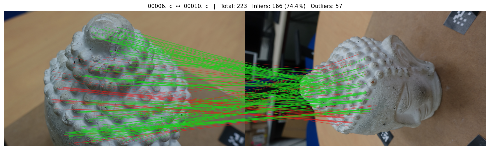 |
| Paar 00039 zu 00058: 1.347 Rohzuordnungen, 803 Inlier (59,6 %) | Paar 00006 zu 00010: 223 Rohzuordnungen, 166 Inlier (74,4 %) |
Jedes Bildpaar durchläuft vier Filter, die alle im eigenen Code verschaltet sind.
Zuerst normiert eine Hartley-Transformation [14] die Pixelkoordinaten: Der Schwerpunkt wandert in den Ursprung, und die Skalierung wird so gewählt, dass der mittlere Abstand vom Ursprung √2 beträgt. Ohne diesen Schritt liegen die Einträge des linearen Systems bei Bildern dieser Größe um Zehnerpotenzen auseinander, was die Konditionszahl verschlechtert. Nach der Schätzung wird F über F = T2T Fnorm T1 in den Pixelraum zurücktransformiert.
Danach schätzt USAC_MAGSAC [5] robust die Fundamentalmatrix mit einer Inlier-Schwelle
von 1,0 px und einer Konfidenz von 0,999. Nur geometrisch konsistente Zuordnungen
überleben; Paare mit weniger als 15 Inliern werden verworfen.
Der dritte Filter prüft nach dem Kriterium von Torr [15], ob eine Homographie dieselben Inlier ebenso gut erklärt. Erklärt sie mehr als 85 %, gilt das Paar als planar und wird verworfen, weil sich aus einer solchen Fundamentalmatrix keine belastbare Rotation ableiten lässt. Ein zweiter Test soll entartete Punktverteilungen abfangen, prüft aber die Singulärwerte der zweidimensionalen Bildkoordinaten und erkennt damit Kollinearität und nicht die beabsichtigte Planarität der Szene. Der Test ist wirkungslos, aber auch harmlos, denn die Homographiekonkurrenz davor fängt den gemeinten Fall bereits ab.
Zuletzt wird die Essential-Matrix bestimmt und über die Cheiralitätsbedingung in die relative Kamerapose zerlegt. Paare mit nahezu verschwindender Basislinie entfallen, weil sie keine Tiefeninformation tragen. Ein Union-Find-Verfahren prüft anschließend die Zusammenhangskomponenten des Szenengraphen und verwirft alles außer der größten. Im Referenzlauf überstehen 643 der 820 geprüften Paare die Verifikation, und alle 67 Bilder liegen in einer einzigen Komponente.
 |
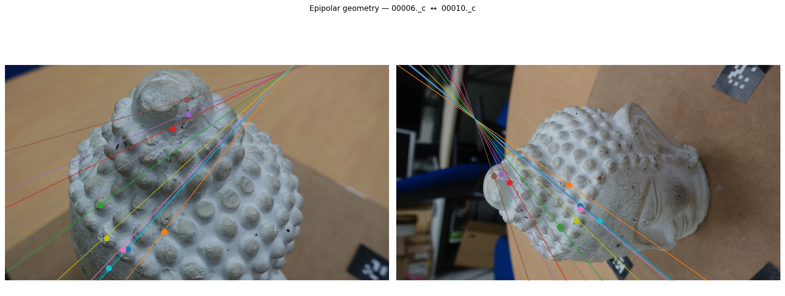 |
Die Rekonstruktion wächst kameraweise. Als Startpaar wählt die Pipeline dasjenige mit dem größten Produkt aus Basislinie und Inlier-Zahl unter allen Paaren, deren medianer Triangulationswinkel mindestens 5° beträgt; findet sich keines, greift eine Notauswahl nach reiner Inlier-Zahl. Im Referenzlauf fällt die Wahl auf die Bilder mit den Indizes 44 und 61, die 2.605 Punkte in einem einzigen Triangulationsschritt liefern.
Anschließend registriert die Pipeline iterativ jeweils das Bild mit den meisten
2D-3D-Korrespondenzen über PnP mit RANSAC und einer anschließenden
Levenberg-Marquardt-Verfeinerung. Neue 3D-Punkte werden mit allen sichtbaren Kameras
trianguliert und nur dann übernommen, wenn sie vier Bedingungen erfüllen: positive Tiefe
in beiden Kameras, Triangulationswinkel von mindestens 2°, Reprojektionsfehler unter
--max_reproj_error (Standard 4 px) in beiden Kameras und ein Abstand vom Ursprung von
höchstens dem Fünfzigfachen des Medians. Die letzte Bedingung fängt Punkte ab, die aus
fast parallelen Strahlen ins Unendliche wandern.
 |
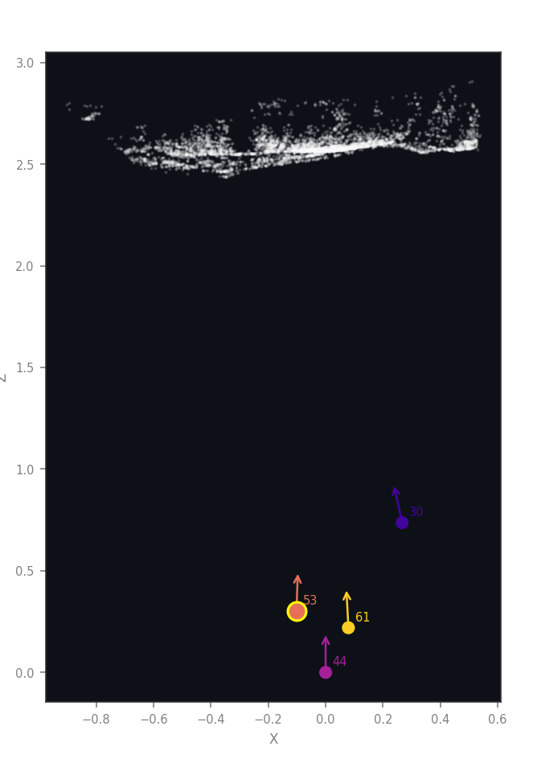 |
 |
| Schritt 001: 2 Kameras, 3.348 Punkte | Schritt 003: 4 Kameras, 5.197 Punkte | Schritt 010: 11 Kameras, 12.573 Punkte |
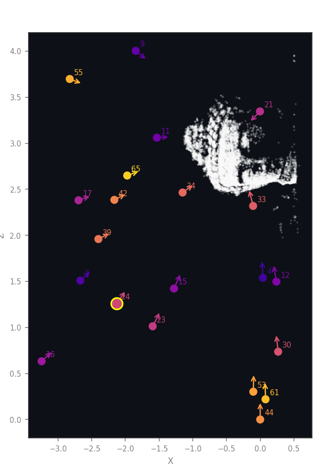 |
 |
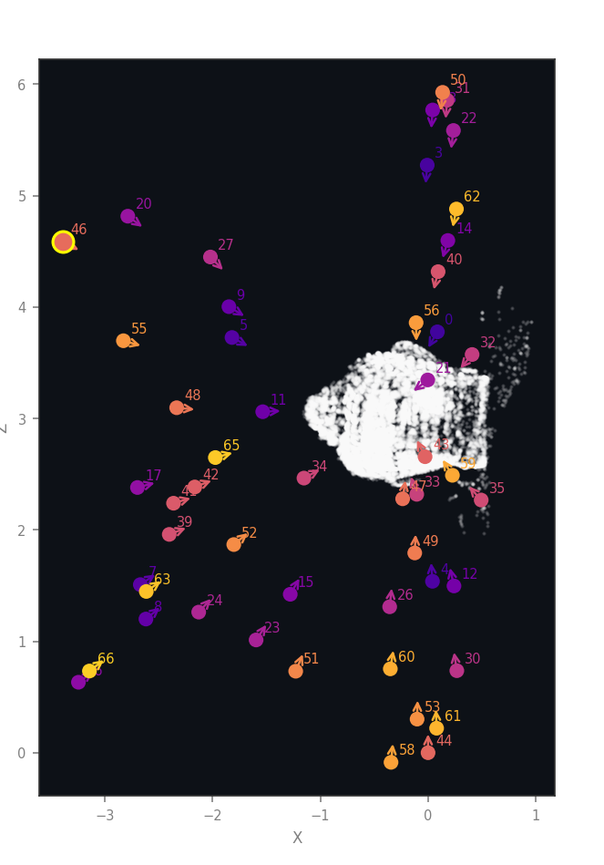 |
| Schritt 020: 21 Kameras, 19.917 Punkte | Schritt 035: 36 Kameras, 31.734 Punkte | Schritt 050: 51 Kameras, 41.716 Punkte |

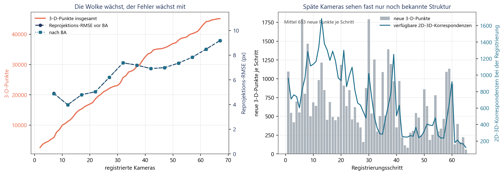
Nach jedem Bundle Adjustment retrianguliert die Pipeline verworfene Korrespondenzen erneut
und entfernt anschließend Punkte, deren mittlerer Reprojektionsfehler eine Schwelle
überschreitet. Die Schwelle ist das Minimum aus dem doppelten --max_reproj_error und dem
Median plus drei Standardabweichungen; im Referenzlauf greift die erste Bedingung mit
8,00 px und entfernt 2.674 der 45.176 Punkte.
Nach jeweils fünf neu registrierten Kameras und am Ende des Laufs optimiert ein Bundle Adjustment alle Parameter gemeinsam. Der Parametervektor enthält die gemeinsame Brennweite, die beiden Verzeichnungskoeffizienten, den Hauptpunkt sowie je Kamera sechs Werte für Rotation im Rodrigues-Vektor und Translation und je Punkt drei Koordinaten. Im Referenzlauf sind das beim letzten Aufruf 5 + 67 · 6 + 45.175 · 3 = 135.932 Parameter für 2 · 132.637 = 265.274 Residuen.
Als Solver dient scipy.optimize.least_squares im Trust-Region-Reflective-Verfahren. Die
Jacobi-Matrix wird numerisch bestimmt, was ohne Zusatzinformation eine Rechnung über alle
Parameterspalten je Residuum bedeutete. Deshalb baut die Implementierung die
Besetzungsstruktur selbst auf und übergibt sie als dünnbesetzte Matrix.
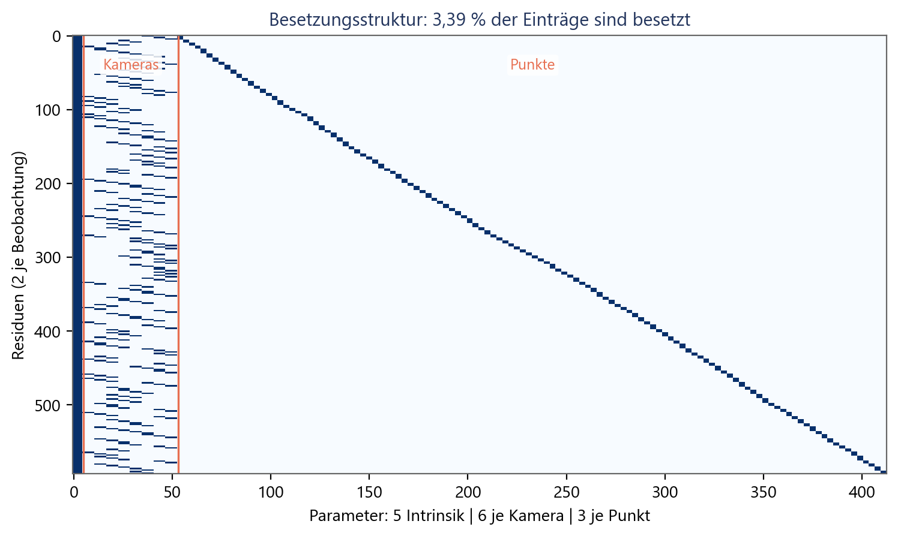
Als robuste Verlustfunktion dient ein Huber-Loss, dessen Skala aus der Streuung der Startresiduen abgeleitet wird: Sie ist der mit 1,4826 auf eine Normalverteilung umgerechnete Median der absoluten Residuen, begrenzt auf das Intervall zwischen 0,5 px und 10 px. Damit passt sich die Grenze zwischen Inlier und Ausreißer dem tatsächlichen Rauschniveau an, statt auf einem festen Wert zu beharren. Die Brennweite ist auf das Intervall zwischen dem Halben und dem Doppelten des Startwerts beschränkt, die Verzeichnungskoeffizienten auf ±2 und der Hauptpunkt auf ±10 % der Bildabmessungen. Ein Divergenzschutz verwirft das Ergebnis, falls sich der Fehler um mehr als den Faktor 1,5 verschlechtert.
Optional beschränkt ein lokales Fenster die Optimierung auf die zuletzt registrierten Kameras, und ein alternativer Solverpfad über pyceres nutzt das Schur-Komplement. Auf der Messmaschine ist pyceres nicht installiert, so dass alle berichteten Läufe den SciPy-Pfad verwenden.

Der Verlauf verdient eine genaue Lesart, denn er ist das wichtigste Diagnosebild dieses
Beitrags. Erstens steigt der Fehler mit jeder zusätzlichen Kamera, im Referenzlauf von
4,91 px bei 7 Kameras über ein Minimum von 3,99 px bei 12 Kameras auf 9,19 px bei allen
67. Mit jeder Kamera wird das Gleichungssystem widersprüchlicher, die Rekonstruktion
wächst also auf Kosten ihrer Konsistenz. Zweitens verbessert das BA den Fehler in keiner
Runde nennenswert; die größte Verbesserung über alle vierzehn Runden des Referenzlaufs
beträgt 0,021 px. Drittens protokolliert jede Runde für die Brennweite eine Änderung von
exakt null, und jede Runde endet mit derselben Abbruchmeldung: xtol, also das Kriterium
für eine zu kleine Schrittweite. Abschnitt 6.5 verfolgt diese Spur bis zur Ursache.
Optional erzeugt die Pipeline über StereoSGBM [16] eine dichte Punktwolke und über
Screened Poisson [17] in Open3D [3] eine Mesh-Oberfläche. Ausgewählt werden Stereopaare
mit ausreichender Basislinie, rektifiziert, disparitätsbasiert trianguliert und über einen
Sichtbarkeitszähler gefiltert. Im dichten Lauf umfasst die Wolke exakt 500.000 Punkte.
Dieser Wert ist keine Eigenschaft der Szene, sondern der fest verdrahtete Standardwert
max_dense_pts, der ohne Hinweis im Log abschneidet und über die Kommandozeile nicht
erreichbar ist. Die Punktzahl einer dichten Wolke trägt in dieser Fassung folglich keine
Qualitätsinformation. Die dichte Stufe kostet im Lauf n67_user 300,6 s zusätzlich.
Vor dem Export filtert die Pipeline ein zweites Mal, nun mit der Schwelle
--max_reproj_error. Im Referenzlauf bleiben 39.721 der 42.502 Punkte übrig. Dieser
Filter ist für die Interpretation aller Kennzahlen wichtiger, als seine Beschreibung
vermuten lässt: Der Reprojektionsfehler, den die Pipeline am Ende ausweist, wird über die
verbliebenen Beobachtungen gerechnet. Aus 9,19 px im letzten Bundle Adjustment werden so
2,08 px im Ergebnisbericht, ohne dass sich an der Geometrie etwas geändert hätte.
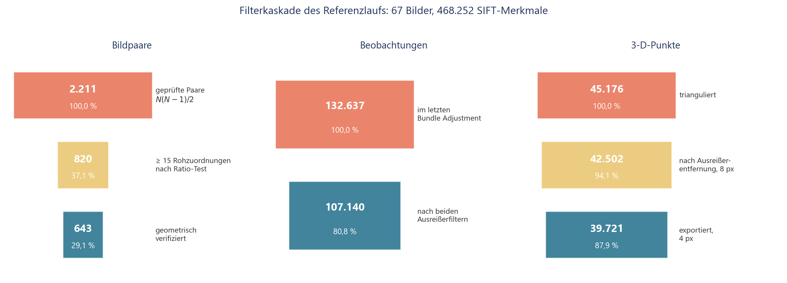
Die Punkte werden aus den Bildern koloriert, in ein binäres PLY mit einfacher Genauigkeit geschrieben und auf Wunsch als Kameraposen im JSON-Format exportiert. Parallel schreibt der Visualizer 19 Typen von Diagnosebildern ohne Bildschirm direkt auf die Platte, auf Wunsch als vektorielles PDF mit 300 dpi. Sämtliche Bilder der Abschnitte 4 und 6 sind mit Ausnahme der eigens erzeugten Abbildungen Nebenprodukte solcher Läufe.
Als Referenzsystem dient COLMAP [2], aufgerufen über denselben Einstiegspunkt
(--backend colmap) auf identischen Eingabedaten. Das Repository startet nacheinander
Merkmalsextraktion, erschöpfendes Matching und den inkrementellen Mapper und liest das
Ergebnis in dasselbe Ausgabeformat zurück. Verwendet wurde COLMAP 4.1.1 ohne CUDA mit
8.000 Merkmalen je Bild und abgeschalteter GPU, so dass beide Systeme ausschließlich auf
der CPU desselben Rechners arbeiten. COLMAP schätzt ein Kameramodell SIMPLE_RADIAL mit
gemeinsamer Brennweite für alle Bilder, also dieselbe Annahme wie die eigene Pipeline.
Ausgewertet wird der Datensatz „Buddha” aus dem AliceVision-Projekt: 67 Aufnahmen einer genoppten Buddha-Statue, 2736 × 1540 Pixel, mit Ground-Truth-Projektionsmatrix je Bild. Aus diesen Matrizen ergibt sich für alle Bilder dieselbe Brennweite von 1.860,90 px und ein Hauptpunkt bei (1.368,8 / 774,3) px, also nahezu die Bildmitte.
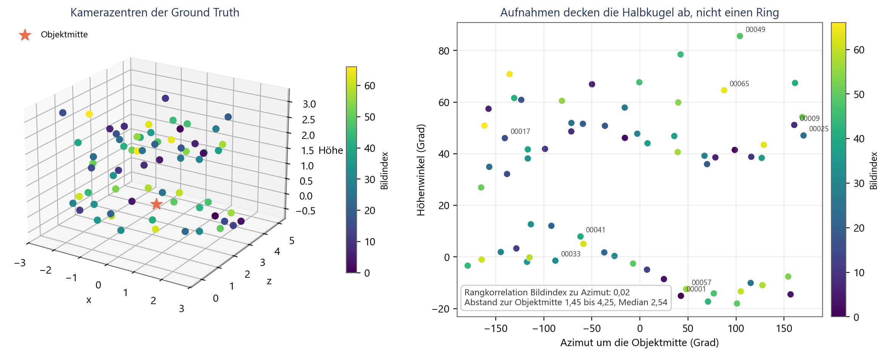
Diese Eigenschaft korrigiert eine naheliegende Annahme: Der Datensatz sieht nach einer Drehtelleraufnahme aus, ist aber keine. Sie erklärt zugleich, warum sequenzielles Matching auf diesen Bildern scheitert, und sie ist der Grund, warum die Kameraverteilung in Fig. 9 flächig und nicht ringförmig aussieht.
Für die Skalierungsmessungen dienen zusätzlich gleichmäßig ausgedünnte Teilmengen mit 6 und 20 Bildern.
Die Auswertung stützt sich auf drei Gruppen von Läufen, die konsequent getrennt gehalten werden.
| Gruppe | Konfiguration | Verwendung |
|---|---|---|
| Bildläufe A und B | 12.000 Merkmale, Ratio 0,70, dichte Stufe an, --visualize |
alle Diagnosebilder der Abschnitte 4 und 6 |
Messreihe eval_results |
14 Läufe mit 6, 20 und 67 Bildern, darunter der Referenzlauf n67_base mit 8.000 Merkmalen und Ratio 0,75 |
alle Kennzahlen und Tabellen |
| Vergleichslauf COLMAP | 8.000 Merkmale, erschöpfend, ohne GPU, dieselben 67 Bilder | Maßstab in Abschnitt 6 |
Referenzlauf ist n67_base, weil er dieselbe Merkmalszahl verwendet wie der
COLMAP-Vergleich und damit als einziger Lauf direkt vergleichbar ist. Die Bildläufe A und
B arbeiten mit mehr Merkmalen und einer strengeren Ratio-Schwelle; ihre Kennzahlen weichen
deshalb ab und werden nur dort zitiert, wo sie in einem Bild stehen.
| Element | Wert |
|---|---|
| Betriebssystem | Windows 10, Build 10.0.26200 |
| Prozessor | AMD64 Family 25 Model 80, ohne CUDA-Nutzung |
| Python | 3.10.6 |
| OpenCV | 4.13.0 |
| NumPy und SciPy | 2.2.6 und 1.15.3 |
| COLMAP | 4.1.1 ohne CUDA |
| nicht verfügbar | torch, kornia, pyceres, poselib, faiss |
Weil torch, kornia, pyceres und poselib fehlen, sind die Pfade für SuperPoint, DISK, LoFTR, DINOv2-Retrieval sowie der pyceres-Solver nicht gemessen. Sie erscheinen nur in der Robustheitsprüfung in Abschnitt 6.10, die feststellt, ob sie verständlich scheitern.
Vollständigkeit ist der Anteil registrierter Kameras an den Eingabebildern.
Reprojektionsfehler ist der euklidische Abstand zwischen gemessenem und zurückprojiziertem Bildpunkt. Berichtet werden RMSE, Mittel, Median und das 95-Prozent- Quantil über alle exportierten Beobachtungen. Der Wert ist eine Selbstauskunft: Er misst, wie gut die Rekonstruktion zu sich selbst passt, nicht wie gut sie zur Wirklichkeit passt.
Posenfehler entstehen erst nach einer Ausrichtung. Da monokulares SfM skalenfrei ist, wird die geschätzte Kameraposition zuerst über eine Sim(3)-Anpassung nach Umeyama [18] auf die Ground Truth gelegt, geschätzt aus den Kamerazentren. Der Positionsfehler ist danach der Abstand zur wahren Position, normiert auf die Ausdehnung der vollständigen Ground-Truth-Trajektorie, damit Läufe mit unterschiedlich vielen registrierten Kameras vergleichbar bleiben. Der Rotationsfehler ist der geodätische Winkel zwischen geschätzter und wahrer Orientierung, nach Abzug der globalen Drehung aus der Ausrichtung. Zusätzlich wird eine RANSAC-Variante der Ausrichtung berichtet, damit eine einzelne grob falsche Kamera das Ergebnis nicht verzerrt; auf dem vollständigen Datensatz stimmen beide Varianten überein.
Tracklänge ist die Zahl der Beobachtungen je 3D-Punkt. Sie misst, wie stark ein Punkt mehrere Kameras miteinander verspannt.
Ein Hinweis zur Vergleichbarkeit mit COLMAP: Die eigene Pipeline mittelt den Reprojektionsfehler über Beobachtungen, COLMAP schreibt in seine Modelldatei je Punkt einen bereits über dessen Track gemittelten Fehler. Beide Größen werden im Folgenden getrennt benannt und nicht in derselben Zeile verrechnet.
Auf dem vollständigen, dicht abgetasteten Datensatz registriert die Pipeline alle 67 Kameras und liefert eine formtreue Rekonstruktion aus 39.721 Punkten. Auf den ausgedünnten Teilmengen bricht die Vollständigkeit ein: Von 20 gleichmäßig verteilten Bildern werden 13 registriert, von 6 gleichmäßig verteilten Bildern mit rund 60° Winkelabstand nur noch 2. Der Sechsbild-Satz, den der Datensatz selbst mitliefert und dessen Ansichten enger beieinanderliegen, wird dagegen vollständig registriert, allerdings mit nur 3.851 Punkten (Tab. B1). Nicht die Bildzahl entscheidet also, sondern der Winkelabstand zwischen benachbarten Ansichten.

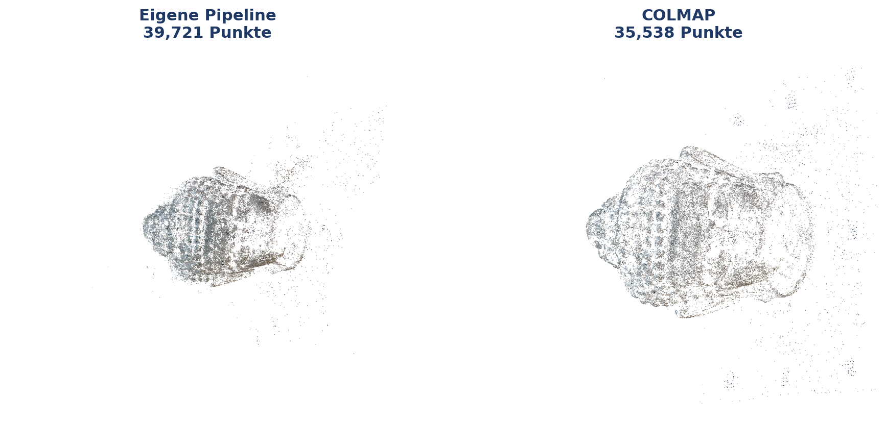
| Kennzahl | n67_base |
n20_base |
n06_mini |
|---|---|---|---|
| Punkte | 39.721 | 5.522 | 3.851 |
| Bytes je Punkt | 15,0 | 15,0 | 15,0 |
| Median des Nachbarabstands | 0,0045 | 0,0069 | 0,0034 |
| exakte Duplikate | 8,14 % | 10,68 % | 14,23 % |
| Flyer (Abstand > 10× Median) | 0,83 % | 0,49 % | 0,57 % |
| Ausreißer (Radius > 5× Median) | 0,01 % | 0,18 % | 0,00 % |
| Punkte ohne echte Farbe | 0,00 % | 0,04 % | 0,00 % |
| Kennzahl | Referenzlauf n67_base |
n67_user |
COLMAP |
|---|---|---|---|
| Registrierte Kameras | 67 von 67 | 67 von 67 | 67 von 67 |
| 3D-Punkte | 39.721 | 40.232 | 35.538 |
| Beobachtungen | 107.140 | 105.044 | 166.740 |
| Mittlere Tracklänge | 2,70 | 2,61 | 4,69 |
| Reprojektionsfehler je Beobachtung, RMSE | 2,08 px | 1,60 px | nicht exportiert |
| Reprojektionsfehler je Punkt, Mittel | nicht exportiert | nicht exportiert | 0,33 px |
| Geschätzte Brennweite | 2.736,0 px | 2.736,0 px | 1.857,5 px |
| Brennweitenfehler | +47,0 % | +47,0 % | −0,2 % |
| Rotationsfehler, Median und Maximum | 6,29° / 20,28° | 6,23° / 16,48° | 0,11° / 0,20° |
| Positionsfehler, Median und Maximum | 2,06 % / 11,60 % | 2,24 % / 9,79 % | 0,02 % / 0,05 % |
| Laufzeit | 1.135,5 s | 1.761,3 s (davon 300,6 s dicht) | 293,4 s |
| Spitzenspeicher | 1.470 MB | 1.541 MB | nicht gemessen |
n67_user arbeitet mit 12.000 Merkmalen und aktivierter dichter
Stufe. Die beiden Zeilen zum Reprojektionsfehler haben verschiedene Bezugsgrößen und sind
nicht gegeneinander zu verrechnen.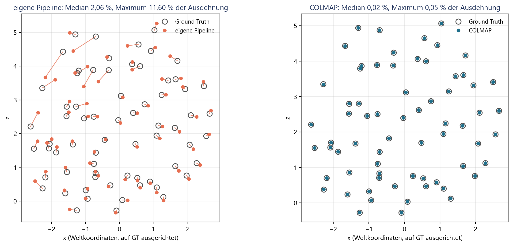
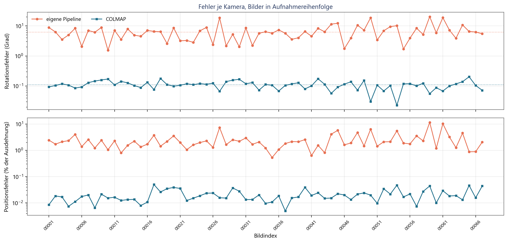
Das zentrale Ergebnis steht in der Zeile zur Brennweite. Die Bilder tragen kein EXIF, weshalb die Intrinsik-Schätzung aus Abschnitt 4.1 auf f = max(W, H) zurückfällt und 2.736 px ansetzt. Der wahre Wert beträgt 1.860,9 px. COLMAP startet ebenfalls ohne Kalibrierung, verfeinert die Brennweite aber im eigenen Bundle Adjustment bis auf 1.857,5 px. Der Datensatz enthält also genügend Information, um die Brennweite zu bestimmen; die eigene Umsetzung holt sie nur nicht heraus.
Ein zweiter Unterschied erklärt einen Teil der Genauigkeitslücke und war in dieser Schärfe bisher nicht vermessen. COLMAP verknüpft 166.740 Beobachtungen zu 35.538 Punkten, die eigene Pipeline 107.140 Beobachtungen zu 39.721 Punkten. COLMAP holt also 56 % mehr Beobachtungen aus denselben Bildern und verteilt sie auf 11 % weniger Punkte. Jede Kamera ist dadurch an mehr gemeinsame Struktur gebunden, und die Lösung wird steifer.
Der Befund aus Abschnitt 6.4 wirft eine Frage auf, die sich mit Beobachtungsdaten allein nicht beantworten lässt: Warum korrigiert das Bundle Adjustment einen Fehler von 875 px nicht, obwohl die Brennweite ein freier Parameter ist und die Schranken den wahren Wert enthalten?
Zwei Erklärungen wurden bereits im Vorfeld ausgeschlossen. Die Schranken des Optimierers
liegen bei 1.368 px und 5.472 px und enthalten den wahren Wert. Eine Parameterskalierung
als Ursache wurde durch einen Kontrolllauf mit x_scale="jac" widerlegt, bei dem sich die
Brennweite ebenfalls nicht bewegte. Übrig blieb die Vermutung, die Rekonstruktion sei bei
der falschen Brennweite bereits in sich konsistent, so dass das BA nichts zu gewinnen
habe. Diese Vermutung ist prüfbar, und für die vorliegende Fassung wurde sie geprüft.
Aufbau. Aus den echten Ground-Truth-Posen jeder dritten Aufnahme, also 23 Kameras, entsteht eine synthetische Szene: 1.500 Punkte auf einer leicht unregelmäßigen Kugelfläche um die Objektmitte, sichtbar nur innerhalb eines Kegels von 75° um ihre Flächennormale, so dass sich realistische Tracklängen von im Mittel 6,4 Kameras ergeben. Die Bildpunkte entstehen durch analytische Projektion mit der wahren Brennweite, überlagert mit 0,5 px Rauschen. Damit sind Merkmalsextraktion und Matching aus dem Versuch entfernt, und alle Korrespondenzen sind exakt. Auf diesen Daten laufen dieselbe Verifikations- und Rekonstruktionsklasse wie im Produktivbetrieb, jedoch mit einer angenommenen Brennweite, die in sieben Stufen zwischen −30 % und +70 % um den wahren Wert variiert. Zufallszahlen von NumPy und OpenCV sind gesetzt, so dass der Versuch wiederholbar ist.
| Brennweite | Kameras | Punkte | RMSE (px) | Median (px) | Rotation (°) | Position (%) | Δf durch BA (px) |
|---|---|---|---|---|---|---|---|
| −30,0 % | 23/23 | 611 | 6,12 | 2,94 | 6,15 | 2,07 | −0,12 |
| −15,0 % | 23/23 | 869 | 6,33 | 2,72 | 1,90 | 0,84 | −0,01 |
| 0,0 % | 23/23 | 1.214 | 2,86 | 1,22 | 0,18 | 0,07 | +0,00 |
| +15,0 % | 23/23 | 890 | 5,50 | 2,86 | 1,85 | 0,59 | +0,06 |
| +30,0 % | 23/23 | 666 | 5,67 | 2,61 | 4,07 | 1,61 | −0,03 |
| +47,0 % | 23/23 | 790 | 6,11 | 3,05 | 2,71 | 0,81 | +0,01 |
| +70,0 % | 23/23 | 517 | 6,39 | 3,33 | 8,45 | 2,22 | −0,01 |
paper/scripts/focal_experiment.py.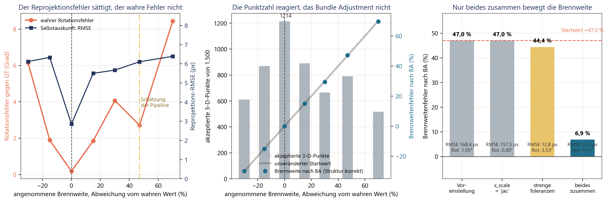
Drei Befunde folgen daraus.
Erstens ist der Reprojektionsfehler als Auswahlkriterium untauglich. Er trennt richtig von falsch, aber er trennt nicht falsch von falscher. Bei −30 % und bei +47 % misst die Pipeline denselben Wert von 6,1 px, während der wahre Rotationsfehler um den Faktor 2,3 auseinanderliegt. Wer die Brennweite über den Reprojektionsfehler suchte, fände auf diesem Datensatz kein brauchbares Minimum.
Zweitens ist die Punktzahl das bessere Signal. Bei der wahren Brennweite überstehen 1.214 der 1.500 Punkte die Annahmekriterien, bei +47 % nur 790 und bei +70 % nur 517. Der Grund ist die Schwelle von 4 px in der Triangulation: Sie entfernt genau jene Beobachtungen, die den Widerspruch sichtbar machen würden. Die Rekonstruktion erhält ihre Selbstkonsistenz also dadurch, dass sie die Gegenbeweise verwirft. Damit ist die eingangs gebliebene Vermutung bestätigt, aber auch präzisiert: Die Konsistenz ist nicht einfach vorhanden, sie wird durch die Filter hergestellt.
Drittens korrigiert das Bundle Adjustment die Brennweite in seiner voreingestellten
Konfiguration auch dann nicht, wenn es einen starken Anreiz dazu hätte. In Reihe B des
Experiments werden Kameraposen und 3D-Punkte exakt auf ihre wahren Werte gesetzt und
allein die Brennweite falsch gestartet. Der Anfangsfehler beträgt dann 189,5 px, es gibt
also viel zu gewinnen. Das BA senkt ihn auf 119,6 px, indem es Posen und Punkte verbiegt,
und bewegt die Brennweite dabei um 3,7 px, das sind 0,4 % des Fehlers von 875 px. In allen
sieben Startwerten bleibt der Brennweitenfehler praktisch unverändert, und jeder Lauf endet
mit derselben Meldung wie im Produktivbetrieb: Abbruch auf dem Schrittweitenkriterium
xtol, bei einem Restfehler von über hundert Pixeln. Der Löser hört also nicht auf, weil
er ein Minimum gefunden hätte.
Diese Spur führt zur Ursache. Reihe C wiederholt dieselbe Aufgabe bei +47,0 % mit veränderten Einstellungen des Lösers, ohne eine Zeile am Modell zu ändern.
| Einstellung des Lösers | Brennweite nachher | Fehler nachher | RMSE 189,5 px wird zu | Rotationsfehler | Abbruch | Rechenzeit |
|---|---|---|---|---|---|---|
| Voreinstellung | 2.735,8 px | +47,0 % | 168,4 px | 1,05° | xtol |
0,1 s |
x_scale="jac" |
2.736,0 px | +47,0 % | 157,5 px | 0,00° | xtol |
0,4 s |
| Toleranzen 1e−12 | 2.687,6 px | +44,4 % | 12,8 px | 3,53° | Budget erschöpft | 257,4 s |
| beides zusammen | 1.989,1 px | +6,9 % | 23,2 px | 0,13° | Budget erschöpft | 280,6 s |
Das Ergebnis ist eindeutig, und es widerlegt die Erklärung, die die Kurzfassung als verbliebene übernommen hatte. Die Brennweite ist aus diesen Daten sehr wohl bestimmbar: Sobald der Parametervektor skaliert wird und die Abbruchkriterien den Löser nicht nach einer Zehntelsekunde stoppen, wandert sie von +47,0 % auf +6,9 %, und der Rotationsfehler fällt auf 0,13°, also in dieselbe Größenordnung, die COLMAP auf den echten Bildern erreicht. Keine der beiden Änderungen genügt für sich: Die Skalierung allein bewegt die Brennweite überhaupt nicht, die Toleranzen allein nur um 2,6 Prozentpunkte.
Der Grund für die Wirkungslosigkeit der Voreinstellung liegt in den Größenordnungen des Parametervektors. Er mischt Rotationskomponenten und Punktkoordinaten der Größenordnung 1 mit einer Brennweite der Größenordnung 2.736. Bei einer relativen Schrittweitentoleranz von 1e−4 gilt ein Schritt bereits als vernachlässigbar, wenn er die Brennweite um weniger als etwa 0,3 px verschiebt, während 875 px zu überbrücken wären. Der Löser bricht ab, bevor er nennenswert vorangekommen ist.
Die dritte Zeile der Tabelle verdient eine eigene Bemerkung, weil sie die These aus Abschnitt 6.6 ein weiteres Mal bestätigt: Sie erreicht mit 12,8 px den kleinsten Reprojektionsfehler der ganzen Reihe und zugleich mit 3,53° den größten Posenfehler. Wer diese vier Varianten am Reprojektionsfehler misst, wählt die schlechteste aus.
Der Preis der wirksamen Einstellung ist Rechenzeit: 280,6 s statt 0,1 s für ein Problem mit 23 Kameras und 1.500 Punkten. Eine praktikable Abhilfe wird deshalb nicht einfach die Toleranzen absenken, sondern die Brennweite besser initialisieren, etwa durch eine Suche beim Startpaar, wie COLMAP sie durchführt, und den Parametervektor dauerhaft skalieren. Beides ist im vorhandenen Code an je einer Stelle möglich.
Der Befund aus dem Experiment lässt sich an den realen Läufen wiederfinden.
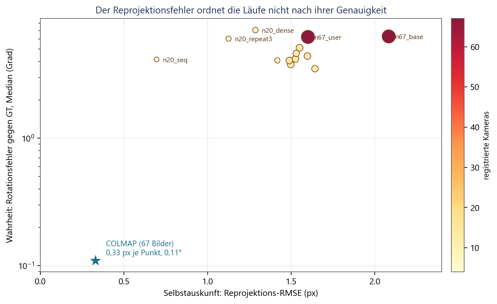
n20_seq erreicht mit
0,70 px den besten Wert der gesamten Reihe, obwohl er nur 4 von 20 Kameras registriert hat
und 4,15° danebenliegt. Der Stern markiert COLMAP; sein Fehler je Punkt ist mit dem RMSE
der eigenen Läufe nicht direkt verrechenbar, seine Lage in der senkrechten Achse dagegen
schon.Daraus folgt die methodisch wichtigste Aussage dieses Beitrags. Die pipeline-eigene Qualitätskennzahl sieht mit 2,08 px genau dann gut aus, wenn die Geometrie um mehr als 6° verdreht ist. Fig. 12 zeigt denselben Sachverhalt von der anderen Seite, denn dort meldet das BA Konvergenz, während der Fehler steigt. Wer allein gegen den Reprojektionsfehler optimiert, optimiert gegen eine Metrik, die diesen Fehlermodus prinzipiell nicht sehen kann. Zwei Auswege haben sich in dieser Arbeit bewährt: der Vergleich gegen eine Referenz, und die Beobachtung der Punktzahl, die auf eine falsche Intrinsik empfindlich reagiert.

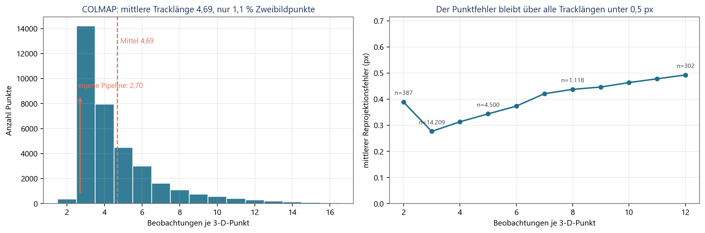
Der Unterschied entsteht nicht beim Detektor, denn beide Systeme verwenden SIFT mit
8.000 Merkmalen. Er entsteht in der Buchführung: Wo Korrespondenzen über mehrere Bilder
hinweg zu einem Track verschmelzen, stützt jeder Punkt mehrere Kameras gleichzeitig. Dazu
passt, dass 8,14 % der eigenen Punkte exakte Duplikate sind (Tab. 5), also Tracks, die
hätten verschmelzen müssen. Die dafür vorgesehene Option --track-merge zeigt im Test
keinen messbaren Nutzen: Der Duplikatanteil steigt von 10,68 % auf 10,87 %, bei einer
Kamera weniger. Angesichts der Streuung zwischen identischen Läufen (Abschnitt 6.9) ist
das kein Effekt, sondern Rauschen.
| Bilder | Paare | Matching (s) | s je Paar | Gesamt (s) | s je Bild | Spitzenspeicher (MB) |
|---|---|---|---|---|---|---|
| 6 | 15 | 7,6 | 0,505 | 13,1 | 2,2 | 1.134 |
| 20 | 190 | 94,4 | 0,497 | 113,0 | 5,6 | 1.184 |
| 67 | 2.211 | 1.036,6 | 0,469 | 1.135,5 | 16,9 | 1.470 |

Dieses Ergebnis widerspricht der Erwartung, mit der das Projekt in die Messung gegangen ist. Die Vermutung lautete, das globale Bundle Adjustment werde zum Engpass, weil der voreingestellte SciPy-Löser das Schur-Komplement nicht ausnutzt. Der Code-Befund stimmt, die daraus abgeleitete Erwartung an die Laufzeit jedoch nicht. Das Bundle Adjustment wächst zwar deutlich schneller als linear, nämlich von 1,2 s bei 13 registrierten Kameras auf 38,2 s bei 67, also um etwa das Zweiunddreißigfache bei gut fünffacher Kamerazahl. Es startet aber von einem so kleinen Betrag, dass es selbst am oberen Ende nur 3,4 % der Laufzeit ausmacht, während das erschöpfende Matching bei 91 % liegt. Hochgerechnet bräuchten 200 Bilder allein für das Matching etwa 2,6 Stunden.
Der Vergleich mit COLMAP zeigt, wie viel davon der Strategie und wie viel der Umsetzung zuzuschreiben ist.
| Stufe | Eigene Pipeline | COLMAP | Verhältnis |
|---|---|---|---|
| Merkmalsextraktion | 41,8 s | 37,3 s | 1,1 |
| Matching, erschöpfend | 1.036,6 s | 212,7 s | 4,9 |
| Verifikation und Rekonstruktion | 46,9 s | 41,6 s | 1,1 |
| Export | 8,0 s | in obigen Zeiten enthalten | |
| Gesamt | 1.135,5 s | 293,4 s | 3,9 |
Das Ergebnis ist deutlicher, als es die Gesamtzahl vermuten lässt. Merkmalsextraktion und Rekonstruktion liegen praktisch gleichauf; der gesamte Rückstand entsteht im Matching. Beide Systeme vergleichen dieselbe Zahl von Paaren mit derselben Zahl von Deskriptoren. Der Unterschied ist damit weder algorithmisch noch sprachbedingt im engeren Sinne: Die Paarschleife der eigenen Pipeline läuft seriell, während COLMAP alle Kerne beschäftigt. Die naheliegendste Beschleunigung dieser Arbeit ist deshalb kein anderer Algorithmus, sondern eine parallele Paarschleife.
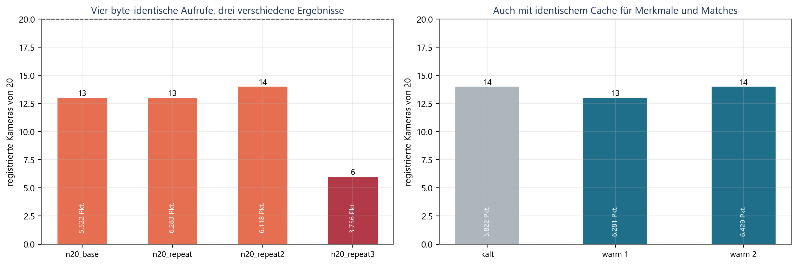
Die Ursache ließ sich eindeutig lokalisieren: cv2.setRNGSeed wird nirgends im Projekt
aufgerufen, so dass USAC_MAGSAC und solvePnPRansac aus dem prozessglobalen
Zufallszahlengenerator von OpenCV ziehen. Die NumPy-Seeds sind dagegen an allen vier
relevanten Stellen fest gesetzt, weshalb nur die OpenCV-Seite betroffen ist. Das
Brennweitenexperiment in Abschnitt 6.5 setzt beide Generatoren und ist deshalb
wiederholbar; die Pipeline selbst ist es nicht.

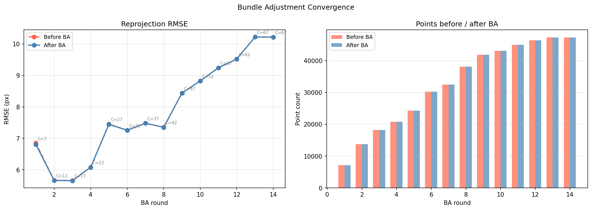
Das Checkpointing selbst arbeitet wirksam. Ein Wiederaufnahmelauf ist 19,9-mal schneller, die Zwischenstände belegen 71,4 MB, und die Invalidierung greift korrekt, wenn sich Parameter oder Bildmenge ändern. Der Schlüssel berücksichtigt allerdings nur Dateiname und Dateigröße. Ein Testfall mit zwei verschiedenen Szenen gleicher Dateigröße zeigt, dass die Wiederaufnahme die Merkmale der ersten Szene für die zweite verwendet, ohne zu warnen.
| Fall | Ergebnis | Beobachtung |
|---|---|---|
| fehlendes Verzeichnis | bestanden | verständliche Fehlermeldung |
| leeres Verzeichnis | bestanden | verständliche Fehlermeldung |
| einzelnes Bild | bestanden | verständliche Fehlermeldung |
| identische Bilder | bestanden | „keine Paare” |
| ohne Überlappung | bestanden | „keine Paare” |
| beschädigtes Bild | gescheitert | Abbruch des gesamten Laufs |
| Backend SuperPoint, DISK, LoFTR, DINOv2 | gescheitert | roher Traceback statt Installationshinweis |
| Backend COLMAP nicht installiert | bestanden | Vorabprüfung mit klarer Meldung |
| pyceres und poselib nicht installiert | bestanden | angekündigter Rückfall auf den Standardpfad |
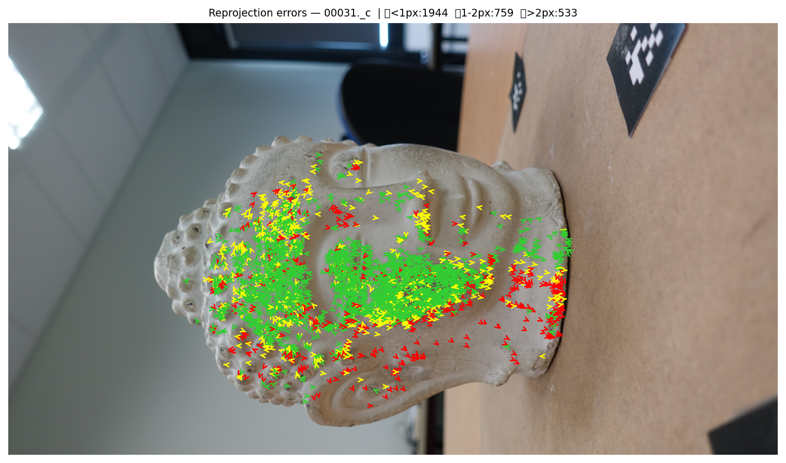
Für die Fehlersuche war dieser Zugang entscheidend. Die steigende Kurve in Fig. 12 und das Übergewicht der Zweifach-Tracks in Fig. 21 haben die in Abschnitt 6.4 vermessenen Defekte überhaupt erst sichtbar gemacht, lange bevor eine Ground-Truth-Auswertung vorlag.
Auf dicht abgetasteten, gut texturierten Szenen arbeitet die Pipeline zuverlässig. Sie registriert alle Kameras, erzeugt eine formtreue und korrekt kolorierte Punktwolke mit weniger als einem Prozent Ausreißern und bleibt dabei mit 1,5 GB Spitzenspeicher im Rahmen eines gewöhnlichen Laptops. Ebenso deutlich sind die Grenzen, und für jede lässt sich die Ursache im Code benennen.
Die Intrinsik ist die gravierendste Schwäche. Ohne EXIF-Daten rät die Pipeline f = max(W, H) und liegt damit 47 % daneben. Neu an dieser Fassung ist die Diagnose, warum das Bundle Adjustment den Wert nicht korrigiert: Es ist nicht in einem konsistenten Minimum gefangen, sondern bricht auf dem Schrittweitenkriterium ab, während der Restfehler noch über hundert Pixel beträgt. Mit skaliertem Parametervektor und abgesenkten Toleranzen findet dasselbe Bundle Adjustment auf denselben Daten eine Lösung mit 6,9 % Brennweitenfehler und 0,13° Posenfehler (Tab. 8). Damit ändert sich die Rangfolge der Abhilfen: Eine Option zur Vorgabe der Kalibrierung bleibt der schnellste Weg zu besseren Ergebnissen, der eigentliche Defekt aber ist die Konfiguration des Lösers.
Die eigene Qualitätskennzahl ist blind für den wichtigsten Fehlermodus. Der Reprojektionsfehler trennt eine richtige von einer falschen Brennweite, ordnet falsche Werte untereinander aber nicht (Fig. 19), und er wird zudem erst nach dem Ausreißerfilter berichtet, der genau die widersprüchlichen Beobachtungen entfernt (Fig. 13). Die Punktzahl reagiert empfindlicher und wäre als ergänzendes Signal geeignet.
Die Ergebnisse sind nicht reproduzierbar. Weil der Zufallszahlengenerator von OpenCV nie gesetzt wird, schwankt die Zahl registrierter Kameras zwischen identischen Läufen um bis zu 57 %. Solange dieser Punkt offen ist, lässt sich der Nutzen jeder weiteren Verbesserung nicht sauber messen, denn jede Änderung verschwindet im Rauschen zwischen zwei Läufen. Das Brennweitenexperiment zeigt zugleich, dass die Behebung trivial ist: Zwei gesetzte Seeds genügen, damit dieselbe Rechnung wiederholbar wird.
Die Skalierungsgrenze liegt beim Matching, und zwar aus zwei getrennten Gründen. Der erste ist die Strategie: Erschöpfendes Matching kostet quadratisch viele Paarvergleiche. Der zweite ist die Umsetzung: Die Paarschleife läuft seriell, während COLMAP dieselbe Aufgabe mit allen Kernen in einem Fünftel der Zeit erledigt (Tab. 10). Die naheliegende Abhilfe über sequenzielles Matching halbiert zwar die Zeit, lässt die Rekonstruktion auf diesem Datensatz aber auf 4 von 20 Kameras zusammenbrechen. Der Grund dafür ist mit Fig. 14 nun geometrisch belegt und nicht mehr nur aus der Match-Matrix abgelesen: Die Rangkorrelation zwischen Dateinamen und Azimut beträgt 0,02, aufeinanderfolgende Bilder sind also keine Nachbarn. Die inhaltsbasierten Alternativen über Bildretrieval benötigen PyTorch, das auf der Messmaschine fehlt.
Die Tracks sind zu kurz. Bei einer mittleren Tracklänge von 2,70 stammt die Mehrzahl der Punkte aus nur zwei Bildern und ist geometrisch schwach abgesichert, was Fig. 21 als Hauptquelle der Fehlerstreuung ausweist. COLMAP erreicht auf denselben Bildern 4,69 Beobachtungen je Punkt und insgesamt 56 % mehr Beobachtungen, und zwar bei weniger Punkten (Fig. 22). Passend dazu sind 8,14 % der eigenen Punkte exakte Duplikate; die dafür vorgesehene Option zeigt im Test keinen messbaren Nutzen.
Ohne Schleifenschluss akkumuliert die Rekonstruktion Spannung. Die Registrierung hängt jede neue Kamera an den bestehenden Verbund an, so dass sich kleine Posenfehler aufsummieren. Genau dieses Verhalten zeigt die steigende Kurve in Fig. 10 und Fig. 12: Der Fehler wächst mit der Zahl der eingefügten Kameras, statt sich zu stabilisieren. Zu beachten ist dabei, dass sich der Zuwachs nicht als Drift entlang einer Aufnahmebahn lesen lässt, denn eine solche Bahn gibt es in diesem Datensatz nicht (Fig. 14 und Fig. 18); es handelt sich um wachsende Spannung im gesamten Verbund. Eine Schleifenschluss-Erkennung ist zwar vorgesehen, setzt aber inhaltsbasiertes Retrieval oder den Vokabularbaum voraus.
Texturarme und planare Szenen bleiben die theoretisch erwartete Grenze. SIFT findet dort zu wenige Merkmale, wobei Fig. 5 die leeren Regionen bereits auf einer gutmütigen Szene zeigt. Bei einer dominanten Ebene lässt sich die Korrespondenz ebenso gut durch eine Homographie erklären, weshalb die daraus abgeleitete Essential-Matrix keine belastbare Rotation mehr liefert. Die Implementierung erkennt diesen Fall über die Homographiekonkurrenz und verwirft das Paar. Ein falsches Ergebnis wird dadurch vermieden, der Bildgraph verliert aber Kanten und zerfällt im Extremfall, statt die Ebene über die Homographie zu behandeln.
Die Reife der Randfälle bleibt hinter der Kernfunktion zurück. Ein einzelnes unlesbares Bild bricht den gesamten Lauf ab, nachdem die Merkmalsextraktion bereits bezahlt ist, und vier nicht installierte optionale Backends melden sich mit einem rohen Traceback statt mit einem Installationshinweis. Beides ist an anderer Stelle im Projekt bereits richtig gelöst, etwa bei der Vorabprüfung des COLMAP-Backends, und müsste lediglich übertragen werden.
Die Grundstruktur ist in beiden Systemen ähnlich, und beide liefen hier auf derselben CPU, mit denselben Bildern und derselben Merkmalszahl. Trotzdem trennen sie Größenordnungen: 0,11° gegenüber 6,29° Orientierungsfehler, 0,2 % gegenüber 47 % Brennweitenfehler, dazu 293 s gegenüber 1.136 s Laufzeit. Nach allem Gemessenen verteilt sich dieser Unterschied auf drei klar benennbare Stellen und nicht auf die Wahl der Algorithmen: die Initialisierung der Intrinsik samt Löserkonfiguration, die Verwaltung der Tracks, und die Parallelisierung des Matchings. In den Stufen, in denen beide Systeme dasselbe tun, also Merkmalsextraktion und eigentliche Rekonstruktion, liegen sie in der Laufzeit gleichauf.
Bemerkenswert ist dabei, dass die eigene Pipeline mehr Punkte erzeugt als COLMAP und trotzdem deutlich ungenauer ist. Punktzahl allein ist als Qualitätsmaß wertlos; die Zahl der Beobachtungen je Punkt sagt mehr.
Die Ergebnisse beruhen auf einem einzigen Datensatz. Er ist gutmütig, denn er ist dicht abgetastet und stark texturiert; die gemessenen Grenzen sind daher eher eine untere Schranke für die Probleme, die auf schwierigerem Material zu erwarten sind. Alle Läufe liefen auf einer Maschine ohne CUDA, weshalb die GPU-Pfade der Pipeline ungeprüft bleiben.
Die Streuung zwischen identischen Läufen begrenzt die Aussagekraft aller Einzelvergleiche in der Messreihe mit 20 Bildern; Unterschiede unterhalb von etwa 10 % in der Punktzahl sind dort nicht interpretierbar. Die Läufe mit 67 Bildern sind davon deutlich weniger betroffen, wie der Vergleich der Läufe A und B zeigt, aber nicht frei davon.
Das Brennweitenexperiment arbeitet mit synthetischen Korrespondenzen. Es zeigt damit das Verhalten der Geometrie- und Optimierungsstufen unter idealen Eingangsdaten und trennt deren Beitrag sauber von Merkmalsextraktion und Matching. Übertragbar auf den Produktivbetrieb ist die Aussage über das Verhalten des Lösers, nicht die absolute Höhe der berichteten Fehler, denn reale Korrespondenzen enthalten Ausreißer, die im Experiment fehlen.
Der COLMAP-Vergleich ist bewusst auf gleiche Bedingungen gestellt, misst aber ein System mit vielen Voreinstellungen gegen ein anderes. Insbesondere ist COLMAPs Matching mehrfädig und nutzt zusätzliche Filter, so dass das Verhältnis von 4,9 in Tab. 10 nicht allein den Fädigkeitsunterschied misst.
Eine vollständig in Python geschriebene SfM-Pipeline rekonstruiert einen gut abgetasteten, texturreichen Datensatz aus 67 Bildern vollständig und formtreu, auf einem handelsüblichen Laptop, in rund 19 Minuten und mit 1,5 GB Spitzenspeicher. Der didaktische Ertrag ist erheblich, denn jede Stufe ist als Bild inspizierbar, und genau diese Bilder haben die Schwächen der Implementierung aufgedeckt.
Das wichtigste Ergebnis ist methodisch und war so nicht geplant: Die Selbstauskunft der Pipeline über ihre eigene Qualität ist unzuverlässig. Ein Reprojektionsfehler von 2,08 px signalisiert eine saubere Rekonstruktion, während die Brennweite 47 % danebenliegt und die Kameraorientierungen im Median um mehr als 6° verdreht sind. Das kontrollierte Experiment dieser Fassung zeigt darüber hinaus, dass dieser Fehler nicht am Modell liegt: Dasselbe Bundle Adjustment findet auf denselben Daten eine Lösung mit 6,9 % statt 47 % Brennweitenfehler, sobald der Parametervektor skaliert und der Abbruch nicht nach einer Zehntelsekunde ausgelöst wird. Der Reprojektionsfehler ist zudem eine gefilterte Größe; er wird über jene Beobachtungen gerechnet, die die Schwellen überstanden haben.
COLMAP auf denselben Bildern liefert die Gegenprobe. Mit 0,11° Orientierungsfehler und 0,2 % Brennweitenfehler in einem Viertel der Laufzeit zeigt es, dass die Daten die Genauigkeit hergeben und die Lücke in der eigenen Umsetzung liegt. Genau das ist für ein Lernprojekt die nützlichste Form eines Ergebnisses, denn sie benennt nicht nur eine Grenze, sondern belegt, dass sie überwindbar ist.
Für die Weiterarbeit ergibt sich daraus eine klare Reihenfolge.
cv2.setRNGSeed und ein --seed auf der
Kommandozeile. Ohne Reproduzierbarkeit ist keine weitere Verbesserung messbar.Erst danach lohnen sich die weiter reichenden Themen, also inhaltsbasierte Vorauswahl der Bildpaare, Schleifenschluss und lernbasierte Matching-Verfahren für schwierige Aufnahmesituationen.
[1] R. Hartley and A. Zisserman, Multiple View Geometry in Computer Vision, 2nd ed. Cambridge, U.K.: Cambridge University Press, 2003.
[2] J. L. Schönberger and J.-M. Frahm, “Structure-from-motion revisited,” in Proc. IEEE Conf. Computer Vision and Pattern Recognition (CVPR), 2016, pp. 4104-4113.
[3] Q.-Y. Zhou, J. Park, and V. Koltun, “Open3D: A modern library for 3D data processing,” arXiv:1801.09847, 2018.
[4] D. G. Lowe, “Distinctive image features from scale-invariant keypoints,” International Journal of Computer Vision, vol. 60, no. 2, pp. 91-110, 2004.
[5] D. Barath, J. Noskova, M. Ivashechkin, and J. Matas, “MAGSAC++, a fast, reliable and accurate robust estimator,” in Proc. IEEE/CVF Conf. Computer Vision and Pattern Recognition (CVPR), 2020, pp. 1304-1312.
[10] M. A. Fischler and R. C. Bolles, “Random sample consensus: A paradigm for model fitting with applications to image analysis and automated cartography,” Communications of the ACM, vol. 24, no. 6, pp. 381-395, 1981.
[11] B. Triggs, P. F. McLauchlan, R. I. Hartley, and A. W. Fitzgibbon, “Bundle adjustment: A modern synthesis,” in Vision Algorithms: Theory and Practice, LNCS 1883, Berlin: Springer, 2000, pp. 298-372.
[12] N. Snavely, S. M. Seitz, and R. Szeliski, “Photo tourism: Exploring photo collections in 3D,” ACM Transactions on Graphics, vol. 25, no. 3, pp. 835-846, 2006.
[13] M. Muja and D. G. Lowe, “Fast approximate nearest neighbors with automatic algorithm configuration,” in Proc. Int. Conf. Computer Vision Theory and Applications (VISAPP), 2009, pp. 331-340.
[14] R. I. Hartley, “In defense of the eight-point algorithm,” IEEE Transactions on Pattern Analysis and Machine Intelligence, vol. 19, no. 6, pp. 580-593, 1997.
[15] P. H. S. Torr and A. Zisserman, “MLESAC: A new robust estimator with application to estimating image geometry,” Computer Vision and Image Understanding, vol. 78, no. 1, pp. 138-156, 2000.
[16] H. Hirschmüller, “Stereo processing by semiglobal matching and mutual information,” IEEE Transactions on Pattern Analysis and Machine Intelligence, vol. 30, no. 2, pp. 328-341, 2008.
[17] M. Kazhdan and H. Hoppe, “Screened Poisson surface reconstruction,” ACM Transactions on Graphics, vol. 32, no. 3, article 29, 2013.
[18] S. Umeyama, “Least-squares estimation of transformation parameters between two point patterns,” IEEE Transactions on Pattern Analysis and Machine Intelligence, vol. 13, no. 4, pp. 376-380, 1991.

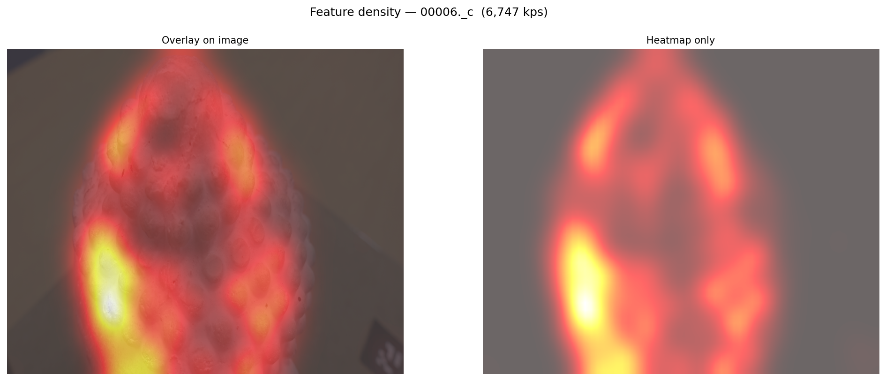

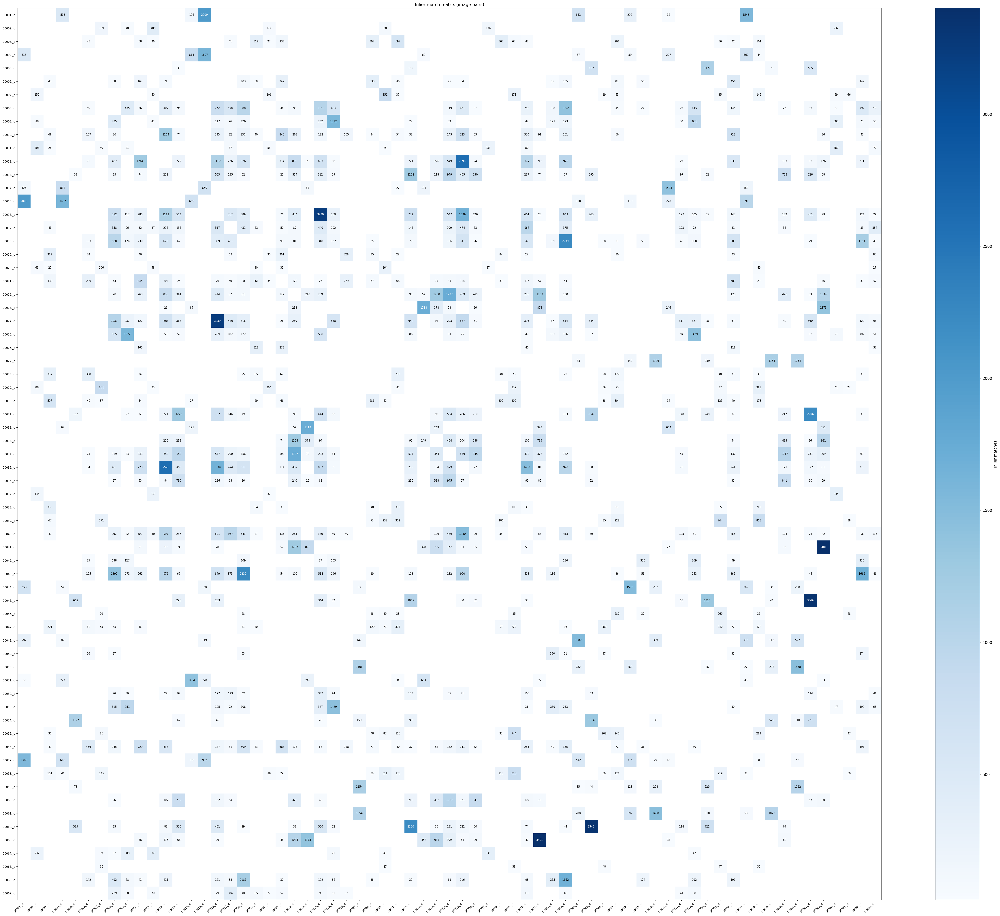

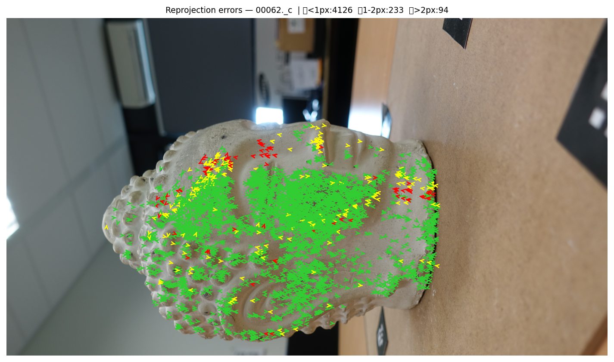
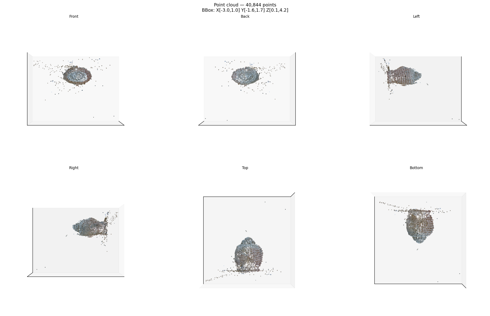

| Lauf | Bilder | Registriert | Punkte | Tracklänge | RMSE (px) | Rotationsfehler Median | Positionsfehler Median | Laufzeit (s) |
|---|---|---|---|---|---|---|---|---|
n06_base |
6 | 2 | 137 | 2,00 | 0,35 | nicht bestimmbar | nicht bestimmbar | 13,1 |
n06_mini |
6 | 6 | 3.851 | 2,27 | 1,42 | 4,08° | 1,73 % | 14,6 |
n20_base |
20 | 13 | 5.522 | 2,33 | 1,53 | 4,19° | 0,79 % | 113,0 |
n20_dense |
20 | 7 | 3.769 | 2,43 | 1,29 | 7,05° | 1,77 % | 158,7 |
n20_feat4k |
20 | 12 | 3.073 | 2,34 | 1,64 | 3,51° | 0,73 % | 61,7 |
n20_feat12k |
20 | 13 | 6.644 | 2,30 | 1,50 | 3,79° | 0,99 % | 130,7 |
n20_localba |
20 | 13 | 5.979 | 2,31 | 1,60 | 4,41° | 1,23 % | 113,5 |
n20_repeat |
20 | 13 | 6.283 | 2,31 | 1,49 | 4,07° | 0,98 % | 111,9 |
n20_repeat2 |
20 | 14 | 6.118 | 2,31 | 1,55 | 5,12° | 1,38 % | 115,0 |
n20_repeat3 |
20 | 6 | 3.756 | 2,42 | 1,13 | 6,04° | 1,56 % | 101,2 |
n20_seq |
20 | 4 | 2.818 | 2,21 | 0,70 | 4,15° | 0,15 % | 57,1 |
n20_trackmerge |
20 | 12 | 5.372 | 2,33 | 1,53 | 4,63° | 0,94 % | 112,5 |
n67_base |
67 | 67 | 39.721 | 2,70 | 2,08 | 6,29° | 2,06 % | 1.135,5 |
n67_user |
67 | 67 | 40.232 | 2,61 | 1,60 | 6,23° | 2,24 % | 1.761,3 |
n06_base registriert nur zwei Kameras, weshalb
sich keine Sim(3)-Ausrichtung bestimmen lässt. Die vier Zeilen n20_base, n20_repeat,
n20_repeat2 und n20_repeat3 sind byte-identische Aufrufe.Alle Bilddateien liegen versioniert unter paper/figures/. Die Originalverzeichnisse
sfm_visualization_* sind über .gitignore ausgeschlossen und werden nicht direkt
referenziert; paper/scripts/collect_run_images.py übernimmt die verwendeten Bilder.
Bildlauf B, 67 Bilder, SIFT auf der CPU, 12.000 Merkmale je Bild, Ratio 0,70,
erschöpfendes Matching, dichte Rekonstruktion aktiviert, Quelle
sfm_visualization_20260803_102114:
| Fig. | Datei unter figures/run_b/ |
Original |
|---|---|---|
| 4 links | abb03a_sift_keypoints.png |
01_features/features_00044._c.png |
| 4 rechts | abb03d_sift_keypoints_00006.png |
01_features/features_00006._c.png |
| 5 | abb03b_feature_density.png |
01_features/density_00044._c.png |
| 6 links | abb04a_matches.png |
02_matching/matches_038_057.png |
| 6 rechts | abb04d_matches_005_009.png |
02_matching/matches_005_009.png |
| 7 links | abb05_epipolar.png |
02_matching/epipolar_038_057.png |
| 7 rechts | abb05b_epipolar_005_009.png |
02_matching/epipolar_005_009.png |
| 8 | abb06a_step001_seed_crop.png bis abb06h_step050_crop.png, auf die linke Teilansicht zugeschnitten |
03_reconstruction/step_001_seed_pair.png sowie step_003, step_010, step_020, step_035, step_050 |
| 9 | abb06e_camera_poses_final.png |
03_reconstruction/camera_poses_final.png |
| 12 | abb07a_ba_convergence.png |
03_reconstruction/bundle_adjustment_convergence.png |
| 15 | abb09_pointcloud_6views.png |
04_pointcloud/pointcloud_6views.png |
| 21 | abb07b_point_lifecycle.png |
03_reconstruction/point_lifecycle.png |
| 27 | abb07d_reprojection_errors_00031.png |
03_reconstruction/reprojection_errors_00031._c.png |
| A1 | abb03c_feature_statistics.png |
01_features/feature_statistics.png |
| A2 | abb03e_feature_density_00006.png |
01_features/density_00006._c.png |
| A3 | abb04b_match_matrix.png |
02_matching/match_matrix.png |
| A5 | abb04c_connectivity_graph.png |
02_matching/connectivity_graph.png |
| A6 | abb07e_reprojection_errors_00062.png |
03_reconstruction/reprojection_errors_00062._c.png |
Bildlauf A, identische Konfiguration, einen Tag zuvor, Quelle
sfm_visualization_20260802_153526: Fig. 25 aus 00_summary/pipeline_summary.png,
Fig. 26 aus 03_reconstruction/bundle_adjustment_convergence.png, Fig. A4 aus
02_matching/match_matrix.png, Fig. A7 aus 04_pointcloud/pointcloud_6views.png.
Eigens erzeugt. Fig. 1 als Vektorgrafik (figures/pipeline_overview.svg), Fig. 3 als
Vektorgrafik (figures/l/fig_l01_pipeline_farbcodiert.svg). Die Abbildungen 2, 10, 11,
13, 14, 17, 18, 20, 22 und 24 entstehen mit paper/scripts/make_figures_l.py aus dem
Protokoll und den exportierten Dateien des Referenzlaufs, aus der COLMAP-Modelldatei und
aus den Kennzahlen der Messreihe. Fig. 19 entsteht aus dem Ergebnis von
paper/scripts/focal_experiment.py. Fig. 16 und Fig. A8 entstehen mit
paper/scripts/compare_ply.py und paper/scripts/align_ply.py, Fig. 23 mit
paper/scripts/plot_scaling.py.
COLMAP-Vergleich. COLMAP 4.1.1 ohne CUDA, aufgerufen als run_sfm.py --backend colmap
auf denselben 67 Bildern mit 8.000 Merkmalen und erschöpfendem Matching. Die Kameraposen
wurden mit paper/scripts/colmap_to_cameras.py in das Format von --export-cameras
überführt und anschließend mit demselben Skript (eval/gt_pose_eval.py) und derselben
Sim(3)-Ausrichtung gegen die Ground Truth bewertet wie die eigenen Läufe. Tracklängen und
Punktfehler stammen aus paper_out/colmap_txt/points3D.txt. Das vollständige Vorgehen
steht in paper/COLMAP_HOWTO.md.
| Ergebnis | Befehl |
|---|---|
| Referenzlauf | python run_sfm.py --image_dir <buddha67> --output out.ply --export-cameras out.cameras.json --n_features 8000 |
| Bildlauf mit Diagnosebildern | python run_sfm.py --image_dir <buddha67> --n_features 12000 --ratio 0.7 --min_inliers 25 --max_reproj_error 3.0 --dense --visualize |
| COLMAP-Vergleich | python run_sfm.py --image_dir <buddha67> --backend colmap --n_features 8000 |
| Bewertung gegen Ground Truth | python eval/gt_pose_eval.py out.cameras.json --gt-dir <buddha> |
| Messreihe und Bericht | python eval/run_matrix.py, danach python eval/report.py |
| Brennweitenexperiment | python paper/scripts/focal_experiment.py --gt-dir <buddha> |
| Neue Abbildungen | python paper/scripts/make_figures_l.py --all --gt-dir <buddha> |
| Diese Fassung als PDF | python paper/scripts/build_paper.py --md paper/paper_l.md --pdf |
<buddha67> bezeichnet das Verzeichnis mit den
67 Bildern, <buddha> das Verzeichnis des Originaldatensatzes mit den
Ground-Truth-Dateien *_P.txt.Layout. Das Layout folgt abstract/workshop_book_styleguide_2026/main.tex: A4 mit
2,5 cm Rand, Segoe UI, Fließtext 9 pt bei 14,4 pt Zeilenabstand im Blocksatz, Titel 12 pt
fett zentriert, Autorenblock 10 pt zentriert, Überschriften zentriert in Fett und in
GFaI-Blau, ebenso die Marken „Abstract:” und „Keywords:”, Abbildungen zentriert auf
Satzspiegelbreite mit Bildunterschrift darunter, Tabellen im booktabs-Stil ohne
Vertikallinien, Literatur im IEEE-Format und keine Seitenzahlen. Zwei bewusste
Abweichungen: Die Bildhöhe ist auf 112 mm begrenzt, damit einzelne quadratische Diagramme
keine ganze Seite belegen, und die Kapitelüberschrift der Literatur lautet „Literatur”
statt „References”, weil der Beitrag deutschsprachig ist. Die Langfassung überschreitet
die Seitenbegrenzung des Tagungsbandes bewusst; die dort einzureichende Fassung ist
paper/paper_6p.md. Der gemessene Umfang dieser Fassung beträgt 39 Seiten bei 35
Abbildungen und 13 Tabellen; die Abbildungen belegen etwa die Hälfte davon.
Prüfung der Zahlen. Alle Kennzahlen dieser Fassung lassen sich mit
python paper/scripts/check_numbers_l.py gegen die Artefakte im Repository nachrechnen.
Das Skript prüft fünfzig Werte aus Protokoll, Laufzusammenfassung, COLMAP-Modelldatei und
dem Brennweitenexperiment sowie die durchgehende Nummerierung der Abbildungen.
Offene Punkte. Offen bleibt eine eigene Aufnahmeserie für den planaren oder texturarmen Grenzfall aus Abschnitt 7, die der Buddha-Datensatz nicht abbilden kann. Ebenfalls offen ist ein Speichervergleich, da für COLMAP kein Spitzenspeicher gemessen wurde. Nicht gemessen sind alle Pfade, die torch, kornia, pyceres oder poselib voraussetzen. Der in Abschnitt 6.5 lokalisierte Löserdefekt ist diagnostiziert, aber nicht behoben; die Wirkung einer Korrektur ist damit noch nicht gemessen.
Abweichungen gegenüber der Kurzfassung. Drei Aussagen der Kurzfassung wurden für diese Fassung korrigiert. Erstens beschreibt sie den Datensatz als Drehtelleraufnahme und die rekonstruierte Kameraverteilung als Abweichung von einer Ringaufnahme; Fig. 14 zeigt, dass die Ground Truth selbst keine Ringaufnahme ist, so dass die flächige Verteilung in Fig. 9 korrekt ist. Zweitens führt die Kurzfassung die unbewegte Brennweite auf ein konsistentes lokales Minimum zurück; das Experiment in Abschnitt 6.5 weist stattdessen einen vorzeitigen Abbruch des Lösers nach und zeigt, dass dasselbe Bundle Adjustment die Brennweite mit anderer Löserkonfiguration weitgehend zurückholt. Drittens zitiert die Kurzfassung Reprojektionsfehler und Median aus zwei verschiedenen Läufen in einem Satz; hier stammen alle Werte einer Aussage aus demselben Lauf.
Hinweise für die Druckfassung. Die eingebundenen Bilder stammen aus Läufen mit
Standardauflösung. Für den Druck lässt sich derselbe Lauf mit --viz-format pdf und
--viz-dpi 300 wiederholen, wobei die Dateinamen gleich bleiben. Wegen der fehlenden
Reproduzierbarkeit ändern sich dabei die Zahlenwerte in den Bildern leicht, so dass die
Bildunterschriften nachzuziehen sind. Fig. 5 ist nicht seitenverhältnistreu, Fig. A5 hat
mit 8025 × 1185 Pixel ein für den Satzspiegel ungünstiges Format, und Fig. 15 trägt viel
Weißraum zwischen den sechs Teilansichten; alle drei gewinnen durch eine Nachbearbeitung
im Visualizer.